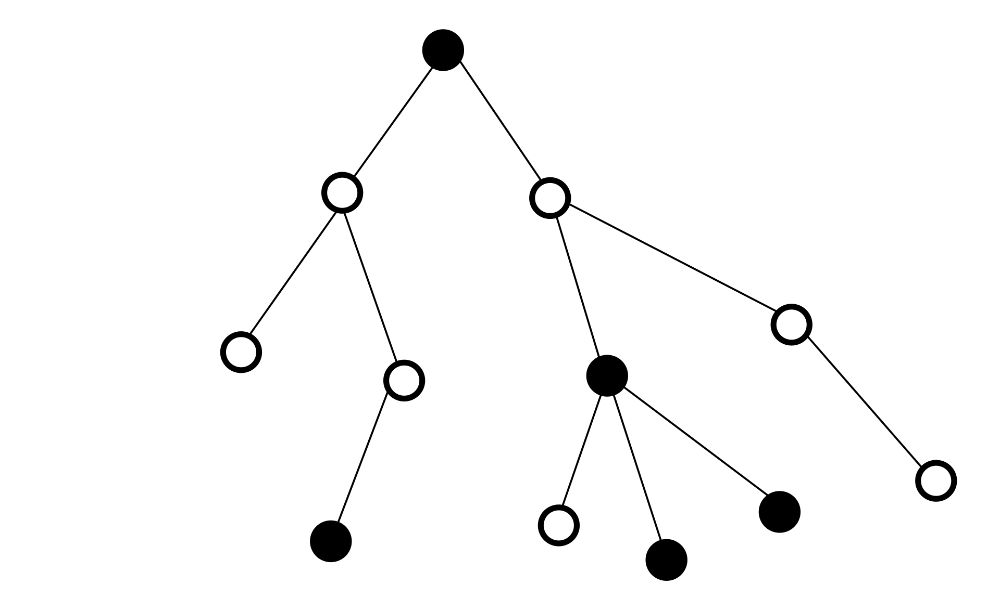
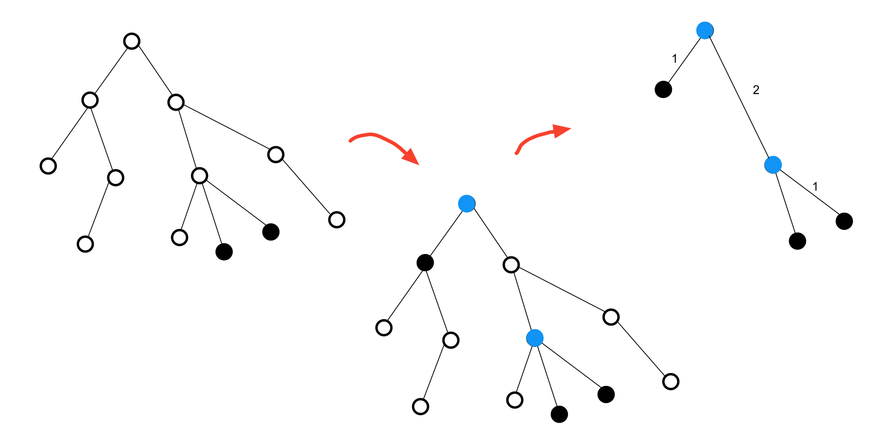

Virtual Tree¶
Consider a tree \(T\). An arbitrary subset of vertices in \(T\), denoted as \(A\), is called a virtual tree if it is closed under the lowest common ancestor (LCA). That is, the LCA of any two vertices in \(A\) must also belong to \(A\).
{kind=link}

Why is a Virtual Tree Important for Us?¶
Suppose we have a large graph where performing a BFS/DFS traversal takes O(n) time. If we need to perform this traversal multiple times for different subsets of nodes, the time complexity becomes problematic.
For example, consider this code snippet:
void dfs(int v) {
visited[v] = true; // This can be done via DFS or BFS
for (int u : adj[v]) {
if (!visited[u]) {
parent[u] = v;
dfs(u);
}
}
}
Now suppose we have several queries where each query gives a subset S of nodes, and we need to work with the subgraph induced by these nodes. A virtual tree helps us reduce the problem size from O(n) to O(k) where k = |S|.

Example of a virtual tree.¶
Note: A virtual tree preserves the connectivity relationships between key nodes while eliminating irrelevant nodes. This structure is particularly useful in problems involving dynamic programming on trees and path queries.
The First Problem¶
Suppose we have a subset of vertices of a tree, denoted as \(B\), colored black. Now we want to color some additional non-black vertices such that all black vertices become connected. We also want to minimize the total number of black vertices. Find this minimum number.
Clearly, to solve this problem, we must color all vertices that lie on the path between at least two black vertices. However, the key question is how to count these vertices in a way that the time complexity depends solely on \(|B|\) and remains completely independent of \(n\). (Meaning if the given set is small, our solution should be fast, and vice versa.)
Let the answer be \(ans\). Note that \(ans\) itself might be very large and not of the order \(|B|\). For example, if the tree is a path and \(B\) consists of the two endpoints, then \(ans = n\). Thus, we cannot work with a time complexity of order \(ans\).
Now consider this interesting observation. In the final state of the tree (where black vertices are connected), define the black degree of a black vertex \(u\) as the number of black vertices adjacent to \(u\). As you might have noticed from the path example, many vertices we are forced to color black may have a black degree of 2!
To simplify the problem, we perform an equivalent transformation. Root the tree at one of the vertices in \(B\). For every vertex \(u\) in \(B\), all vertices on the path from \(u\) to the root must be colored black, and this suffices to satisfy the connectivity condition.
Here, the problem starts to resemble the virtual tree problem. Assume we keep adding vertices to \(B\) until it becomes closed under the lowest common ancestor (LCA). That is, as long as there exist two vertices \(u, v\) in \(B\) whose LCA is not in \(B\), we must color their LCA and add it to \(B\).
For every non-root vertex \(u\), define its virtual parent \(p_u\) as the lowest black ancestor of \(u\). Note that the vertices between \(u\) and \(p_u\) are precisely those we mentioned earlier that end up with a black degree of 2, and their count can be large. If we count these vertices for all \(u, p_u\) pairs (their number is \(h_u - h_{p_u} - 1\)) and add this to the current number of black vertices, we obtain the answer.
We have omitted several key points here, such as:
How do we efficiently find the vertices to add to \(B\) to construct the virtual tree?
Why does the maximum size of the virtual tree depend only on \(B\) and not \(n\)?
We will address these questions later. It is also worth noting that the problem can be solved just as easily without rerooting the tree. The rerooting was merely a didactic choice to simplify the explanation!
Suppose you are given a tree \(T\) and a set \(B\). Now, you need to name two vertices in \(B\) such that the distance between them is maximized.
We discussed the algorithm for finding the diameter of a tree using dfs in Chapter 2. Here, if the vertices in \(B\) are connected, we can use the same dfs algorithm. What if they are not connected? Our current challenge is similar to the previous problem. That is, for every pair of vertices \(u,v\) in \(B\), we want to add all vertices along the \(uv\)-path to \(B\) and then apply the dfs algorithm on the resulting graph.
However, this approach is not ideal in practice because, as mentioned in the previous problem, the number of vertices we need to add to \(B\) could become very large.
Here, similar to the previous problem, we use a virtual tree. We expand the set \(B\) until it forms a virtual tree. In this new graph, we draw an edge between each vertex and its virtual parent with a weight of \(h_u - h_{p_u}\). The resulting new tree is our virtual tree! By finding the diameter of this tree, we determine the maximum distance between the original vertices in \(B\).
Algorithm¶
In this section, we will examine classical algorithms in graph theory and their implementations. Graphs as mathematical structures have various algorithms for traversal, pathfinding, and optimization.
The following code shows a simple example of graph representation using adjacency list:
# Drawing the nodes
nodes = ['A', 'B', 'C', 'D']
adjacency_list = {
'A': ['B', 'C'],
'B': ['A', 'D'],
'C': ['A'],
'D': ['B']
}
print('Hello, Graphs!') # Output message

One fundamental algorithm is graph traversal. Depth-First Search (DFS) and Breadth-First Search (BFS) are two common approaches. In DFS, we explore as far as possible along each branch before backtracking, while BFS explores all neighbors at the current depth level before moving deeper.
Introduction¶
As you have likely intuited from previous problems, a virtual tree can represent a small subtree of our tree. An interesting point is that this subtree is not necessarily connected; however, if we construct a new tree where each node is connected to its virtual parent, we obtain a new tree. From this point onward, we can consider only the new tree and perform our computations on it.
{kind=link}

In this section, we assume the set of vertices \(B\) is given, and we want to add some vertices to it so that \(B\) becomes a virtual tree. We refer to this process as expansion.
First Attempt¶
In the first step, for every two vertices in the set \(B\) such as \(a, b\), we can compute \(lca(a, b)\) and call this set \(C\).
Now, we claim that \(D = B \cup C\) is a virtual tree. To prove this, note that every vertex in \(D\) has a member of \(B\) within its subtree. (Why?) Now, suppose there are two vertices \(a, b \in D\) whose \(lca\) is not in \(D\). Name the vertices in \(B\) that were in the subtrees of \(a, b\) as \(a\prime, a\prime\) respectively. If \(lca(a, b)\) is not in \(D\), then \(lca(a\prime, b\prime)\) would be the same as \(lca(a, b)\), which is in \(C\), contradicting our initial assumption.
Therefore, it suffices to perform these computations for every two vertices in \(B\) (and there is no need to check the \(lca\) of newly added vertices with others).
A Better Algorithm¶
The method we discussed earlier had high time complexity. If we consider the computations for \(lca\) as \(O(\lg(n))\), then the previous method would be \(O(|B|^2)\).
Now we try to find a better approach. Consider a vertex called \(u\) that is not in \(B\) but must be in the virtual tree. That is, the vertex \(u\) has two children \(a, b\) where in the subtree of each \(a\) and \(b\), there exists one or more vertices from \(B\) (whose \(lca\) would be \(u\)).
Note that taking the \(lca\) of any vertex in the subtree of \(a\) with any vertex in the subtree of \(b\) will result in vertex \(u\). The problem with the previous algorithm was that in this scenario, it would compute \(u\) many times unnecessarily. Specifically, for every ordered pair of vertices from subtrees \(a\) and \(b\), it would compute vertex \(u\) once, which is exactly what caused the high time complexity in the previous method.
The key insight is that if we can establish an initial ordering for the vertices of tree \(T\) such that in this ordering, the subtree of each vertex corresponds to an interval, then we can use the following method and claim it works correctly:
Sort the vertices in \(B\) according to this specified ordering.
For every two consecutive vertices in the sorted list, add their \(lca\) to set \(C\).
The union of the two sets \(B\) and \(C\) forms our virtual tree.
Why does this algorithm work correctly? We stated that vertex \(u\) has two children where each child's subtree contains at least one vertex from \(B\). In the sorted list generated by the algorithm, there exists an interval corresponding to the subtree of \(u\). Within the vertices of this interval, there must be two vertices belonging to subtrees of different children of \(u\) (Why?). Therefore, when computing their \(lca\), vertex \(u\) will be added to set \(C\)—exactly as we desired!
In the above algorithm, we magically used an order that had an interesting property. However, we did not provide such an order.
Can you create such an order yourself? All methods for constructing such an order are rooted in the dfs algorithm. Why? Because when we want to compute this order for the subtree of a vertex like \(u\), we must first recursively find such an order for the subtrees of all children of \(u\), then add the vertex \(u\) somewhere between the intervals of two children (or before/after all of them).
This is exactly what dfs calls starting-time or finishing-time, which we examined in Chapter 2.
Implementation¶
class Graph:
def __init__(self):
self.adj_list = {} # Read graph from file
def add_vertex(self, v): # Create graph members
if v not in self.adj_list:
self.adj_list[v] = []
def add_edge(self, u, v): # Get the number of vertices from file
self.adj_list[u].append(v) # Create vertices
self.adj_list[v].append(u) # Get the number of edges from file
# Create edges
graph = Graph()
with open("graph.txt") as f: # Get edge from file
n = int(f.readline()) # Add edge to graph
for _ in range(n):
graph.add_vertex(int(f.readline()))
m = int(f.readline())
for _ in range(m):
u, v = map(int, f.readline().split())
graph.add_edge(u, v)

In this example, the graph is read from a file and stored using an adjacency list. Each line in the file represents an edge between two vertices.
const int maxn = 1e5 + 10, max_log = 20;
int start_time[maxn], sparse_table[maxn][max_log], h[maxn];
vector<int> g[maxn];
int Counter = 0;
void dfs(int v, int par = 0){
h[v] = h[par] + 1;
sparse_table[v][0] = par;
for(int i = 1; i < max_log; i++){
sparse_table[v][i] = sparse_table[sparse_table[v][i-1]][i-1];
}
start_time[v] = Counter;
Counter = Counter + 1;
for(int u : g[v]){
if(par != u){
dfs(u, v);
}
}
}
int lca(int a, int b){
if(h[a] < h[b])
swap(a, b);
for(int i = max_log-1; i >= 0; i--){
if(h[sparse_table[a][i]] >= h[b])
a = sparse_table[a][i];
}
if(a == b)
return a;
for(int i = max_log-1; i >= 0; i--){
if(sparse_table[a][i] != sparse_table[b][i])
a = sparse_table[a][i], b = sparse_table[b][i];
}
return sparse_table[a][0];
}
vector<int> build_virtual_tree(vector<int> vec){
sort(vec.begin(), vec.end(), [](int a, int b){ return start_time[a] < start_time[b]; }); // sort on starting time
for(int i = vec.size()-1; i > 0; i--){
vec.push_back(lca(vec[i], vec[i-1]));
}
sort(vec.begin(), vec.end(), [](int a, int b){ return start_time[a] < start_time[b]; });
vec.resize(unique(vec.begin(), vec.end())-vec.begin());
return vec;
}
In the above code, the LCA is computed using a method with time complexity \(O(\lg(n))\), and ultimately, finding the expansion of the virtual tree for set \(B\) is performed in \(O(|B| \times \lg(n))\) time.
This book is made by The Shaazzz contributors.
It is publicly available with cc-by-sa license.
Last updated at سپتامبر 30, 2025.
Rendered by Sphinx (4.3.2) and Minoo theme (Beta 0.9.7).